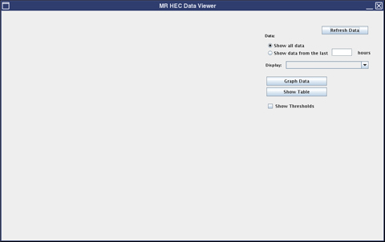
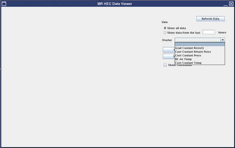
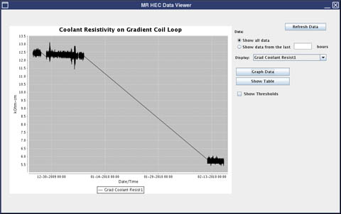
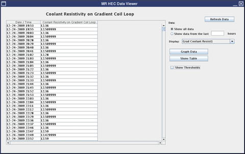
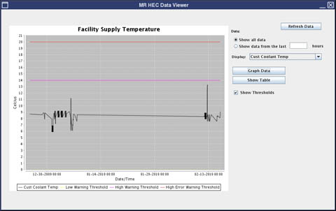

GE Exclusive Use Only
Direction 5500113, Rev# 3
Discovery MR750 3.0T Service Methods
Module Version 2.0, Version Date 5/13/10
GE Exclusive Use Only |
To access the HEC Viewer tool, go to the Service Desktop and select Service Browser > Utilities. The HEC Viewer is a tool that provides an interface to plot the characteristics of the cooling subsystem over time in graphical format or in a table. These parameters are available to graphically plot and view:
Gradient Coil Resistivity
Customer Supply (Facility Coolant Inlet) Pressure
Customer Return (Facility Coolant Outlet) Pressure
Customer (Facility) Coolant Temperature
RF Air Temperature (HEC chilled air expelled into space between Gradient and RF Coil)
The HEC Data Viewer interface takes defined parameters and plots data points, showing the upper and lower threshold limits for these characteristics.
Illustration 1: HEC Data Viewer - Main Screen

The values for the HEC are updated 60 seconds after TPS Reset completes and when the measured value changes by more than the thresholds indicated below.
Pressure Sensors: 0.5 bar
Resistivity Sensors: 0.1 kOhm-cm
Temperature Change: 0.1 degree C/min.
There are a number of buttons and operations available on the HEC Data Viewer Interface that are described below.
[Refresh Data] button will refresh the data to gather the latest data points taken from the system.
[Show All Data] radio button will grab all of the latest data from the system.
[Show data from the last test ___ hours] radio button will grab the data points within the last XX hours specified by the user.
Display drop-down menu will allow the user to select the data to plot from the following:
Gradient Coil Resistivity
Customer Supply Pressure
Customer Return Pressure
Customer Coolant Temperature
RF Air Temperature
Illustration 2: HEC Data Viewer - Display Drop-Down Menu

[Graphic Data] button will display the selected data in a graphical format in the left pane as shown below.
Illustration 3: HEC Data Viewer - Graphic Data

[Show Table] button will display the selected data in a table in the left pane as shown below.
Illustration 4: HEC Data Viewer - Show table

Show Thresholds - Selecting this box will plot a horizontal line showing the thresholds (upper and lower limits) for the selected data.
Illustration 5: HEC Data Viewer - Show Thresholds
